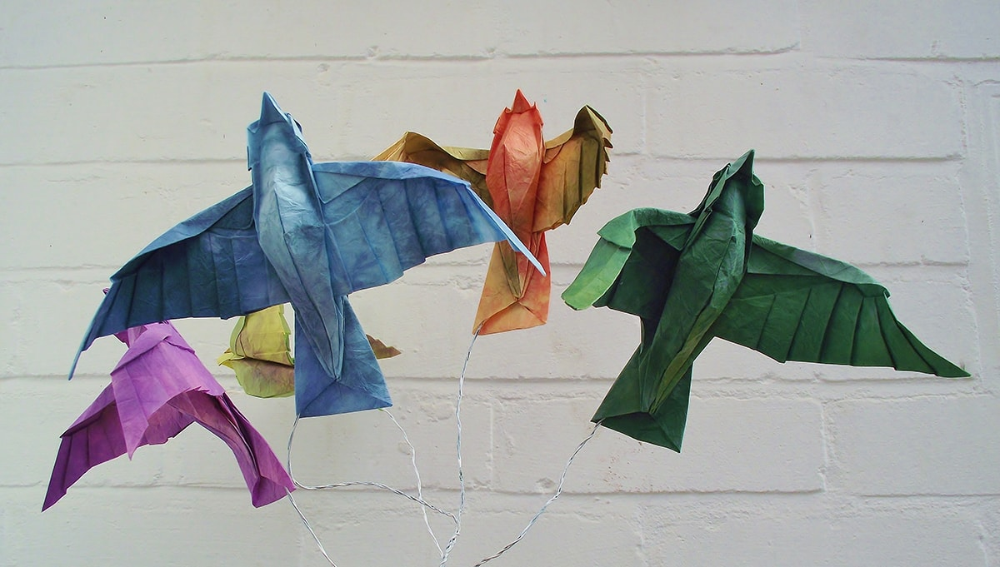
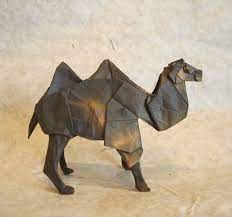

Origami Designs
About Me
Follow Me

Interesting facts about a Chameleon
- Chameleons are reptiles part of the iguana suborder
- Changing skin color is an important part of communication among Chameleons
- Most chameleons have a prehensile tail that they used to wrap around tree branches

Interesting facts about a pigeon
- Pigeons are incredibly complex and intelligent animals.
- Pigeons are renowned for their outstanding navigational abilities.
- Pigeons are highly sociable animals.
- Pigeons mate for life, and tend to raise two chicks at the same time.

Interesting facts about a camel
- There are two types of camels: One humped or “dromedary” camels and two humped Bactrian camels
- Camels have three sets of eyelids and two rows of eyelashes to keep sand out of their eyes.
- Camels have thick lips which let them forage for thorny plants other animals can't eat.

Interesting facts about a flying-cicada
- Cicadas can survive a huge fall as babies, or nymphs.
- The loud whirring or buzzing sound you hear is an all-male cicada chorus.
- Most have red-orange eyes.
- Females may be attracted to the sound of motors.